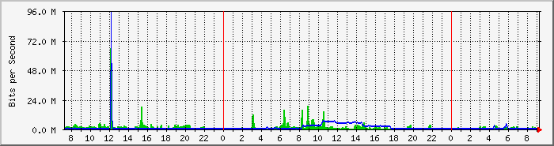
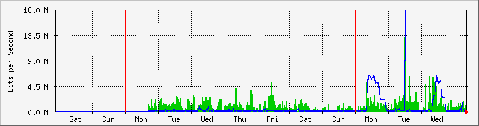
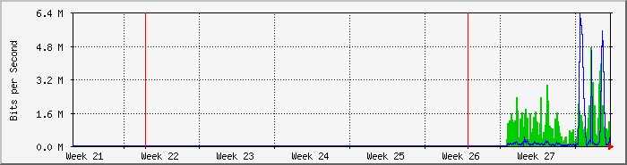
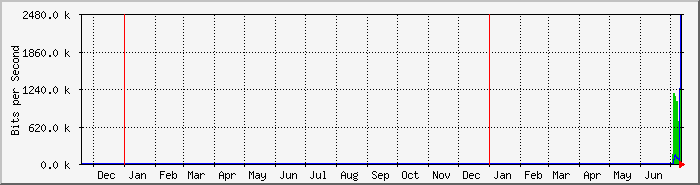

FortiGate 60D Interfaz WAN2 (ISP Telecentro) - Barrio Nuevo Buenos Aires
| Equipo: | FortiGate 60D |
| Mantenido por: | redes@ersaurbano.com |
| Descripcion: | wan2 |
| Tipo de Puerta: | ethernetCsmacd (6) |
| Nombre de Puerta: | wan2 |
| Max Speed: | 125.0 MBytes/s |
| Ip: | 190.55.157.22 (cpe-190-55-157-22.telecentro-reversos.com.ar) |
The statistics were last updated Thursday, 14 July 2022 at 9:16,
at which time 'BNUEVO' had been up for 1 day, 21:08:17.
`Daily' Graph (5 Minute Average)

|
Max |
Average |
Current |
| In |
65.6 Mb/s (6.6%) |
1565.7 kb/s (0.2%) |
535.1 kb/s (0.1%) |
| Out |
94.5 Mb/s (9.5%) |
1012.0 kb/s (0.1%) |
45.6 kb/s (0.0%) |
`Weekly' Graph (30 Minute Average)

|
Max |
Average |
Current |
| In |
13.1 Mb/s (1.3%) |
1038.4 kb/s (0.1%) |
1137.2 kb/s (0.1%) |
| Out |
17.8 Mb/s (1.8%) |
536.7 kb/s (0.1%) |
103.4 kb/s (0.0%) |
`Monthly' Graph (2 Hour Average)

|
Max |
Average |
Current |
| In |
4707.1 kb/s (0.5%) |
1032.9 kb/s (0.1%) |
1134.7 kb/s (0.1%) |
| Out |
6275.6 kb/s (0.6%) |
537.1 kb/s (0.1%) |
515.0 kb/s (0.1%) |
`Yearly' Graph (1 Day Average)

|
Max |
Average |
Current |
| In |
1654.8 kb/s (0.2%) |
899.6 kb/s (0.1%) |
1654.8 kb/s (0.2%) |
| Out |
2444.5 kb/s (0.2%) |
392.8 kb/s (0.0%) |
542.7 kb/s (0.1%) |
| GREEN ### |
Incoming Traffic in Bits per Second |
| BLUE ### |
Outgoing Traffic in Bits per Second |